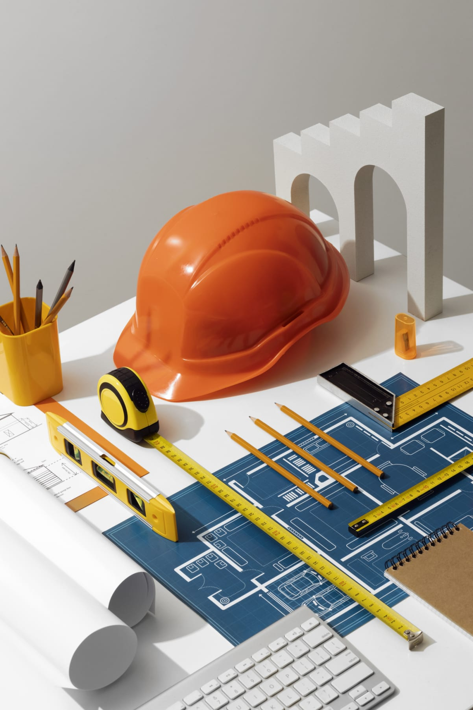

Glasfaser & Hausanschlüsse
Stabile und zukunftsfähige Anbindungen für Wohn- und Gewerbeeinheiten - von der Trasse bis zur Übergabe.
Tiefbau und Netzausbau mit Substanz
Wir verbinden Baustelle und Zukunftsinfrastruktur - von präzisem Tiefbau über Hausanschlüsse bis zur leistungsstarken Glasfaserverlegung.
Fokus: Glasfaser & Hausanschlüsse
Leistungen
Unser Team realisiert Projekte strukturiert, termintreu und mit technischem Blick fürs Detail. Von der Planung bis zur finalen Oberfläche arbeiten wir mit klaren Abläufen und hoher Ausführungsqualität.
Stabile und zukunftsfähige Anbindungen für Wohn- und Gewerbeeinheiten - von der Trasse bis zur Übergabe.
Flexible Erweiterungen bestehender Netzabschnitte für neue Anforderungen, zusätzliche Nutzer und Wachstum.
Montage und Integration robuster Verteil- und Multifunktionsgehäuse als zuverlässige Knotenpunkte der Infrastruktur.
Sichere, langlebige und wartungsfreundliche Schachtbauwerke für unterirdische Leitungsführung.
Praxisbewährte Verfahren für effiziente Bauabläufe, saubere Trassen und belastbare Ergebnisse.
Fachgerechte Wiederherstellung und Gestaltung von Oberflächen nach Tiefbauarbeiten - technisch sauber, optisch stimmig.
Nachweise & Vertrauen
Wo keine belastbaren Zahlen aus veröffentlichten Referenzen vorliegen, zeigen wir transparente, nachprüfbare Fakten aus unserer Leistungstiefe und Projektstruktur.
0
Leistungsfelder aus einer Hand
0
Projektkategorien in der Galerie
0
Direkte Kontaktwege
0
Verlässlicher Partnerfokus
Projekte
Filtern Sie nach Themen und öffnen Sie jedes Bild im Fokusmodus.
Warum wir
YILDIZ TIEF & NETZAUSBAU GmbH steht für verlässliche Projektabwicklung im Infrastrukturumfeld. Unser Anspruch ist ein Ergebnis, das technisch überzeugt und im Alltag dauerhaft funktioniert.

Kontakt
Schreiben Sie uns oder rufen Sie direkt an - wir melden uns zuverlässig zurück.
Heidelberger Straße 14
64283 Darmstadt